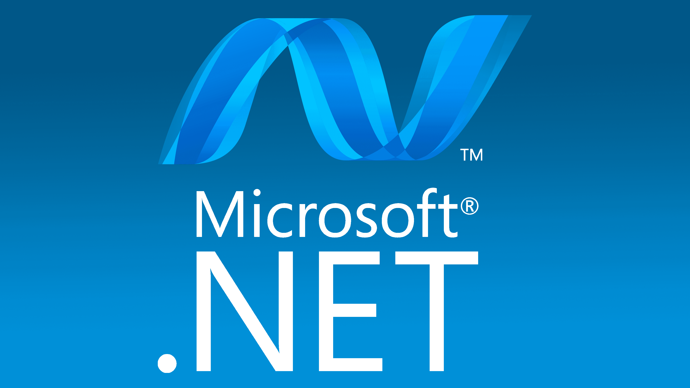

Mean
MongoDB, Express. js, AngularJS, and Node. js
The MEAN stack is a JavaScript-based framework for developing web applications. MEAN is named after MongoDB, Express, Angular, and Node, the four key technologies that make up the layers of the stack.

Mern
MongoDB, Express, React, Node
The MERN stack is a web development framework made up of the stack of MongoDB, Express.js, React.js, and Nodejs. It is one of the several variants of the MEAN stack.

.NET
Dot NET
.NET Framework is used to create and run software applications. . NET apps can run on many operating systems, using different implementations of .NET